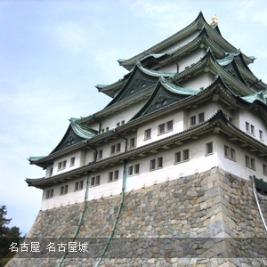
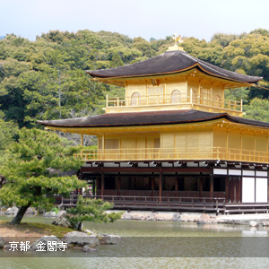
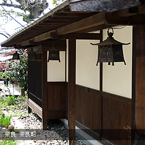
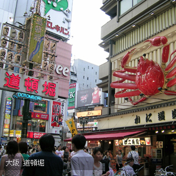

關西地區包括大阪、奈良、京都、名古屋、神戶等城市, 是日本的古都所在地, 例如大阪城、名古屋城等等, 都是歷史上重要的政治、經濟樞紐。關西地區也保存了許多重要的古蹟和傳統文化, 例如金閣寺、清水寺等著名的寺廟, 都是想要探訪日本文化的您不得不去的景點。另一方面, 關西各地的道地美食也值得推薦哦！


本網站刊登之所有文字．圖片資訊均受版權法保護 嚴禁擅自複製．轉載 Copyright © 2016 vito-app Co.,Ltd. All rights reserved